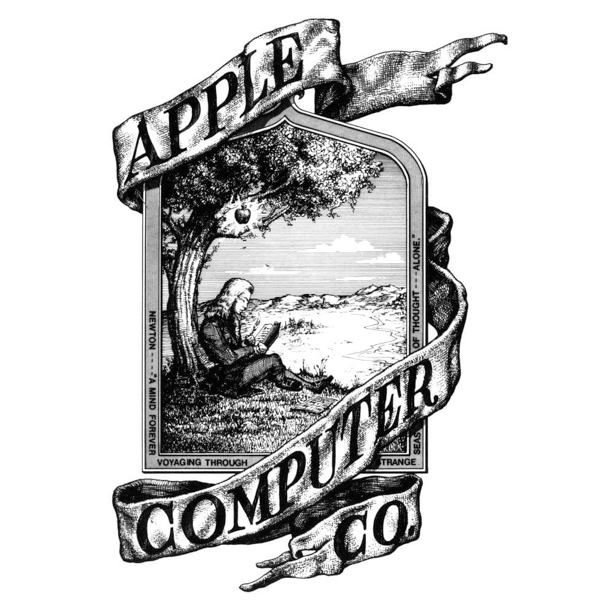
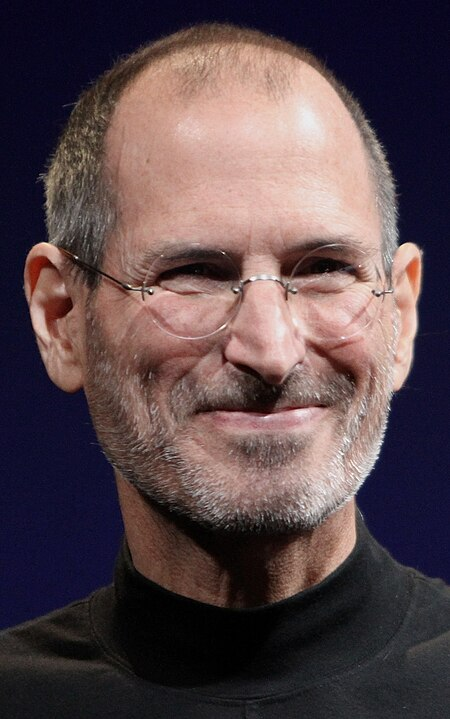
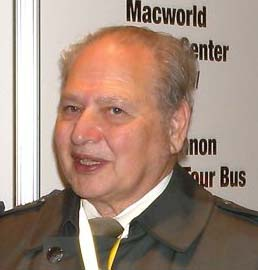
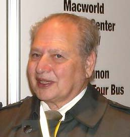

historia da SIMBOLO da apple
"foi associado ao suicídio de Alan Turing, conhecido como pai da computação".De acordo com Steve Jobs, o nome da empresa foi inspirado por sua visita a uma fazenda de maçãs, enquanto ele estava em uma dieta frutarianista. Jobs pensava que o nome "Apple" era "divertido, animado.
rivais da apple
os rivais da apple na area de smartphones e o Sistema Operacional Android que teve sua primeira logo Assim.

A primeira versao
O primeiro protótipo da empresa foi o Apple I que foi demonstrado na Homebrew Computer Club em 1975, as vendas começaram em julho de 1976 com o preço de US$ 666,66, aproximadamente 200 unidades foram vendidas,[21] em 1977 a empresa conseguiu o aporte de Mike Markkula e um empréstimo do Bank of America.
Novidades
anteriormente Apple Computer é uma empresa multinacional norte-americana que tem o objetivo de projetar e comercializar produtos eletrônicos de consumo, software de computador e computadores pessoais. Os produtos De hardware.
ELETRONICOS
produtos de hardware mais conhecidos da empresa incluem a linha de computadores Macintosh, iPod, iPhone, iPad, Apple TV e o Apple Watch. Os softwares incluem o sistema operacional macOS, o navegador de mídia iTunes, suíte de software multimídia e criatividade iLife
Criador
A Apple foi fundada em 1 de abril de 1976 por Steve Wozniak, Steve Jobs e Ronald Wayne com o nome de Apple Computers, na Califórnia. O nome foi escolhido por Jobs após a visita do pomar de maçãs da fazenda de Robert Friedland, também pelo fato do nome soar bem e ficar antes da Atari nas listas telefônicas.teve Jobs, cujo nome completo é Steven Paul Jobs, foi um dos fundadores da Apple, uma das empresas mais inovadoras e influentes do séculoXXI
 

Sistemas
O iOS também é um sistema operacional, mas é exclusivo para smartphones da Apple, o iPhone. Também era usado no iPad, mas o tablet da maçã ganhou o próprio sistema, chamado de iPadOS.